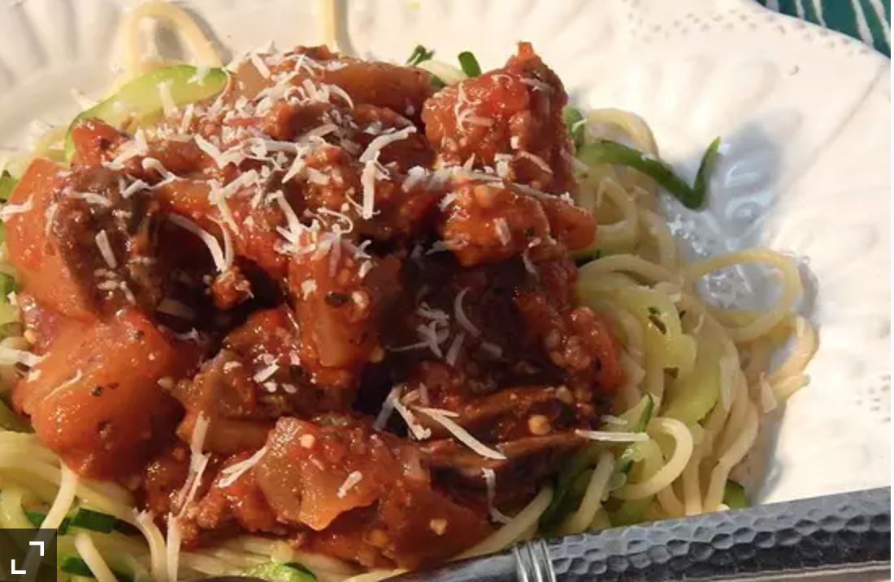

<!DOCTYPE html>
<html lang="en">
<head>
    <meta charset="UTF-8">
    <meta http-equiv="X-UA-Compatible" content="IE=edge">
    <meta name="viewport" content="width=device-width, initial-scale=1.0">
    <title>Document</title>
</head>
<body>
    
</body>
</html>DOCTYPE html>
<html lang="en">
<head>
    <meta charset="UTF-8">
    <meta http-equiv="X-UA-Compatible" content="IE=edge">
    <meta name="viewport" content="width=device-width, initial-scale=1.0">
    <title>Eggplant Bolognese</title>
</head>
<body>
    <h1>Eggplant Bolognese</h1>
    <p></p>
    <p>
        Italian recipes are my favorite especially when eggplant is included. This is a hearty bolognese and a 
        paleo recipe that is prepared in one pot! You can add any of your favorite vegetables such as peppers or 
        zucchini. You serve over spaghetti squash, zucchini noodles, or your favorite pasta! Enjoy!
    </p>
   
    <p><h4>Ingredients</h4></p>
    <p>
        <ul>¼ cup olive oil, divided</ul>
        <ul>3 links pork sausage, casings removed</ul>  
        <ul>½ pound ground beef </ul>
        <ul>2 pounds eggplant, peeled and chopped</ul>
        <ul>3 cloves garlic, minced </ul>  
        <ul>1½ teaspoons sea salt/ul>
        <ul>¾ teaspoon freshly ground black pepper</ul>
        <ul>1 (8 ounce) package sliced fresh mushrooms</ul>
        <ul>1 (28 ounce) can crushed tomatoes</ul>
        <ul>1 (12 ounce) can petite diced tomatoes</ul>
        <ul>1 teaspoon dried parsley</ul>
        <ul>1 teaspoon dried oregano</ul>
        <ul>1½ teaspoons dried basil</ul>
           
    </p>

    <p>
        <h4>Steps</h4>
    </p>

   
    
    <ol>
        <li>Heat 2 tablespoons olive oil in a large Dutch oven over medium heat; cook pork sausage, breaking it onto 
            smaller pieces with a wooden spoon, until browned, about 5 minutes. Add ground beef; cook and stir until 
            beef is browned and crumbly, about 5 minutes. Drain excess fat.
        </li>
        <li> Pour remaining olive oil over sausage mixture; add eggplant, onion, garlic, salt, and black pepper. Cook 
            and stir until lightly browned, about 10 minutes. Add mushrooms and continuing cooking until tender, about 
            5 minutes.
        </li>
        <li>Mix crushed tomatoes, diced tomatoes, parsley, oregano, and basil into sausage mixture; bring to a boil. 
            Cover Dutch oven, reduce heat to medium-low, and simmer for 30 minutes.

        </li>
    </ol>

    </p>
</body>